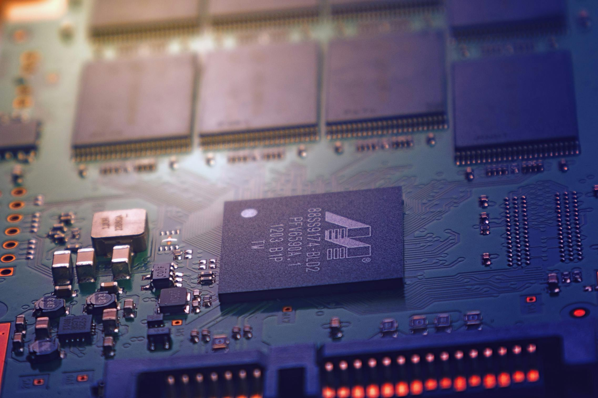
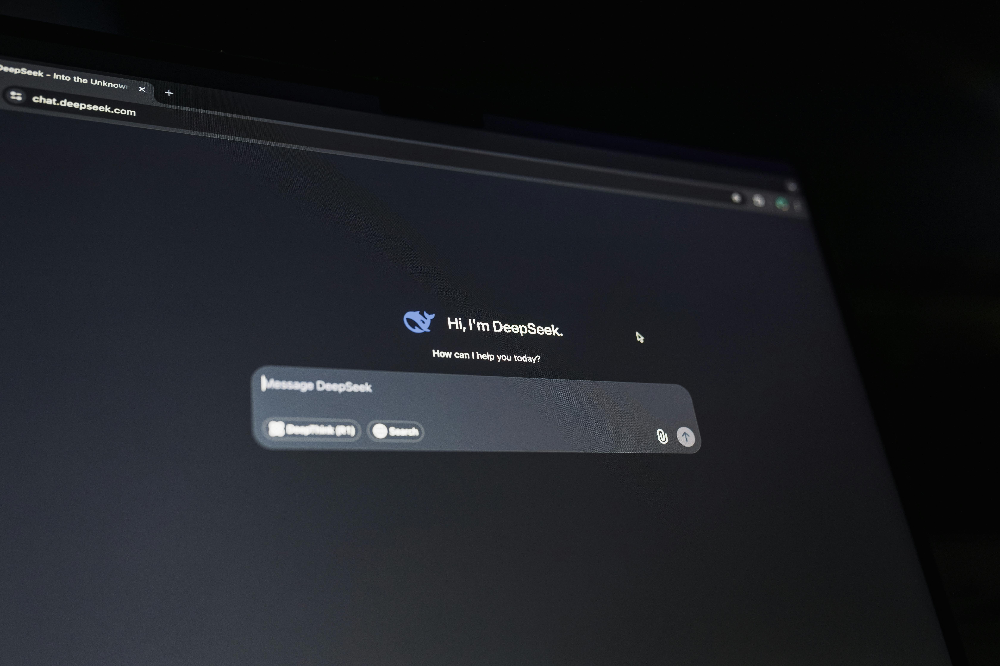

Computação Quântica
Pesquisadores avançam no desenvolvimento de computadores quânticos capazes de resolver problemas impossíveis
Descubra os últimos avanços na área de inteligência artificial e como eles estão transformando o mundo.

Pesquisadores avançam no desenvolvimento de computadores quânticos capazes de resolver problemas impossíveis
Novos testes com veículos autônomos mostram avanços importantes na segurança e na navegação em ambientes urbanos

A expansão das redes 5G promete conexões mais rápidas e maior estabilidade para dispositivos móveis e cidades inteligentes.
Empresas estão investindo em robôs capazes de realizar tarefas complexas em fábricas, hospitais e centros logísticos.

Assistentes digitais estão se tornando mais inteligentes e integrados ao cotidiano das pessoas em casas e dispositivos móveis.
Empresas estão adotando edge computing para processar dados mais perto dos dispositivos